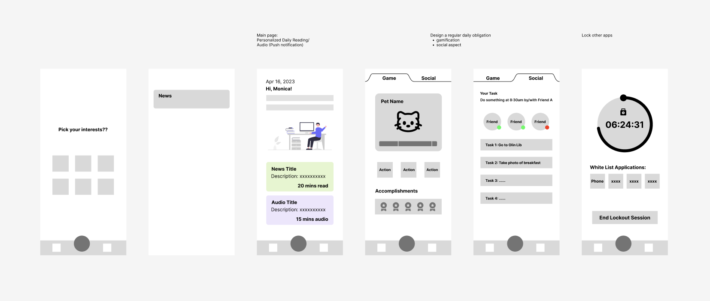

METHOD & FINDINGS
Following the HCD framework, we conducted semi-structured interviews, diary studies, and a co-design workshop to inform our final design. These methods allowed us to investigate different questions at various stages of the research and design process, with each question's focus building sequentially on insights obtained from the preceding method.
Diary Studies
We conducted a one-week diary study involving Cornell students to gain deep insights into their smartphone usage before bedtime. Through a combination of feedback and elicitation diaries, participants self-evaluated their pre-bed smartphone behaviors, offering real-time insights impossible to obtain from surveys. We engaged eight students who used smartphones extensively before sleep. Participants documented anticipated usage, activities, and submitted Google Forms with morning reflections and screenshots of their entries.
Data analysis unveiled patterns like social media's time-consuming allure, impacting sleep latency. The study highlighted preferences for activities with endpoints and the challenge of managing stimulating games. Some found comfort in pre-sleep calls, while interventions varied in effectiveness. Notably, locking phones aided one participant, fostering a consistent sleep schedule. Early obligations were found to advance sleep timings.
Co-Design Workshop
We conducted a co-design workshop to enhance the pre-bed experience in a more personalized manner. Our approach involved recruiting four participants from earlier contextual interviews and diary studies, ensuring diverse perspectives. The goal was to maintain balanced input by selecting individuals with varied pre-bed routines. We re-engaged the same participants to establish trust and rapport, facilitating valuable feedback for refining the final design.
We presented our printed guiding prototypes to familiarize participants with the potential scope of our final design and encouraged them to critique and develop new ideas by drawing and annotating on the prototypes.

The co-design workshop produced various types of data, including field notes, sketches, photos, record clips, and design ideas. To systematically analyze the data, the audio recordings were transcribed and the field notes were reviewed across participants to identify common themes and patterns. By comparing both results and complementing each other, the insights were used to guide the design decisions and ensure that the design was tailored to the users' needs, enabling refinement of the design iteratively based on user feedback.